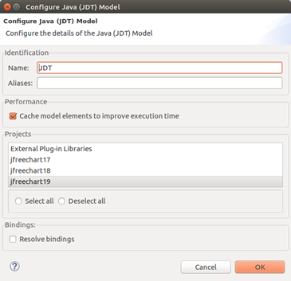
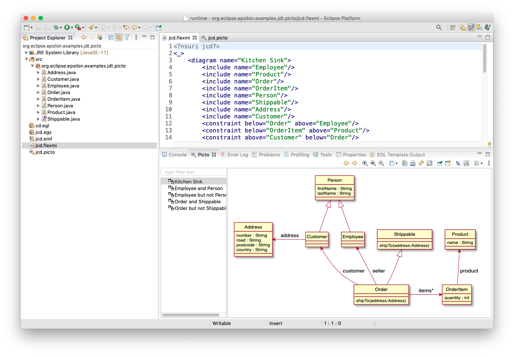

Treating Java code as a model in Epsilon¶
In version 2.4 of Epsilon we introduced a driver that allows Epsilon languages to query Java code as if it were a model, using the internal representations of the Eclipse Java Development Tools.
But, wait a second, why should I want to do this?¶
There are many cases in which you may want to check things about your code. In many cases, a simple text-based search or the code navigation facilities in your IDE might be enough. For instance, finding a class by name or listing its inherited methods is something we do all the time.
However, what if you want to check something very particular which is not supported by your IDE, and which involves “understanding” Java? As an example, suppose that you want to find all the places in your code where a new programmer may have used == to compare floating-point numbers. This is a very common mistake that novices make.
Text search won’t help you: floating-point expressions and variables can be arbitrarily complex. You will need to parse the Java code, find these == comparisons and reimplement the bits of the Java Language Specification needed to find if one of the two sides is a floating-point expression. Too much work for a quick check you wanted to run on your code!
A simpler approach would be to have a tool give you a representation of the code that is close to how the compiler thinks about it, and that you can go through easily. This is what we mean with having a model. In particular, this example would be solved with our tool by writing this snippet of EOL code:
for (expr in InfixExpression.all) {
if (expr.operator.toString() == "==") {
var typeLExpr =
expr.leftOperand.resolveTypeBinding().qualifiedName;
var typeRExpr =
expr.rightOperand.resolveTypeBinding().qualifiedName;
if (typeLExpr == "float" or typeRExpr == "float") {
var cUnit = expr.root.javaElement.elementName;
("WARNING: in " + cUnit
+ ", tried to use == with a float: "
+ expr).println();
}
}
}
This query finds the == expressions in your code, reuses the Eclipse Java Developer Tools to find if one of the two sides is a float (we’re ignoring double to simplify things), and then reports any problems. It can handle non-trivial cases like method invocations, array accesses and so on. And all in 12 lines of code.
How does it differ from other tools?¶
The usual approach when exposing code as a model is to parse the code, dump it as a model (e.g in XMI) and then treat it as usual. This approach is followed by popular tools such as MoDisco, and it works well in “software modernization” situations in which you have a “frozen” legacy code base. This is the bottom path shown on this figure, starting from “Java code” and going to the cyan nodes:

However, if you have an active codebase, having to extract a full model every time you make a change is tedious and slows you down. Instead, it’d be better to just have something running in the background keeping such a model up to date. The good news is that many IDEs already do this for their code navigation facilities, so we can piggyback on it without adding yet another background process to the user experience.
Our EMC JDT driver is exactly that – we don’t do any big extraction work in advance, so the query starts running almost immediately. The driver exposes the indices maintained by the Eclipse Java Development Tools, so you can quickly find a class and go through its methods, for instance. If at some point you need more information than the indices provide, we’ll transparently use the JDT parser (based on the Java compiler) to fetch things for you. This is represented as the top path in the above figure, starting at “Java code” and going through the orange nodes.
How is it used?¶
With Epsilon and the EMC JDT driver installed, we create a new “query.eol” file with our query. For instance, this one-liner prints how many types we have in our program:
TypeDeclaration.all.size.println("number of types: ");To run it, we create a standard EOL launch configuration and then select the new “Java” model type:

We then select a set of Eclipse Java projects to expose as a model:

You can select multiple projects through Ctrl+click – these will all be exposed as a single model. Here I have code for various versions of the JFreeChart library, and I have selected the code for the 1.0.19 version in particular.
Click on OK, then Run, and you’ll get your answer:
number of types: 1041
What other things can I do?¶
While the previous example was very simple, EOL is a fully-featured language, with support for loops, user-defined operations, built-in data structures and full access to any Java library. In this paper we showed how to use it to validate your real Java code against a UML diagram, checking if perhaps your UML diagram had gone “stale”. We found that using the EMC JDT driver would be faster than using MoDisco if you just wanted to do this check repeatedly across multiple releases.
Essentially, we expose the JDT document object model (DOM) directly through Epsilon, so if you want to access all instances of the JDT DOM TypeDeclaration class, you write TypeDeclaration.all as we did above. We also provide a few convenient shorthands. For a TypeDeclaration t, you can use these:
t.public,t.protected,t.private,t.static,t.abstract,t.final: these are true/false depending on whether the underlying type has this modifier.t.name: this exposes the name of the underlying type (which usually requires going through multiple fields).
We also expose the JDT index so you can quickly find a type by name: in fact, it’s the same index you use when pressing CTRL+SHIFT+T on Eclipse. To do so, you can use one of these:
TypeDeclaration.all.select(td|td.name="someClass")finds a type by name and returns it as a collection of TypeDeclarations with access to every detail within those types.TypeDeclaration.all.search(td|td.name="someClass")does the same, but it only returns the raw index entry (an instance of IType), which is much faster but has less information.
Applications¶
In this example, we use the JDT driver and Picto to generate PlantUML diagrams from existing Java code on the fly.

<?nsuri jcd?>
<_>
<diagram name="Kitchen Sink">
<include name="Employee"/>
<include name="Product"/>
<include name="Order"/>
<include name="OrderItem"/>
<include name="Person"/>
<include name="Shippable"/>
<include name="Address"/>
<include name="Customer"/>
<constraint below="Order" above="Employee"/>
<constraint below="OrderItem" above="Product"/>
<constraint above="Customer" below="Order"/>
<constraint right="Customer" left="Address"/>
</diagram>
<diagram name="Employee and Person">
<preamble>
skinparam monochrome true
skinparam handwritten true
</preamble>
<postamble>
note left of Employee: People working for our company
note right of Person::"lastName : String"
The person's last name
end note
</postamble>
<include name="Employee"/>
<include name="Person"/>
</diagram>
<diagram name="Employee but not Person">
<include name="Employee"/>
</diagram>
<diagram name="Order and Shippable">
<include name="Order"/>
<include name="Shippable"/>
<constraint right="Order" left="Shippable"/>
</diagram>
<diagram name="Order but not Shippable">
<include name="Order"/>
</diagram>
</_>
<?nsuri picto?>
<picto format="egx" transformation="jcd.egx" standalone="true">
<model type="EMF">
<parameter name="name" value="JCD"/>
<parameter name="metamodelUri" value="jcd"/>
<parameter name="modelFile" file="jcd.flexmi"/>
</model>
<model type="JDT">
<parameter name="name" value="JDT"/>
<parameter name="projects" value="org.eclipse.epsilon.examples.jdt.picto"/>
</model>
</picto>
rule Diagram2PlantUML
transform diagram : JCD!Diagram {
template : "cd.egl"
parameters : Map{
"path" = Sequence{diagram.name},
"format" = "puml"
}
}@startuml
hide circle
[%diagram.populate();%]
[%=diagram.preamble%]
[%for (class in diagram.types.select(t|t.isTypeOf(Class))){%]
class [%=class.name%] {
[%for (attribute in class.attributes){%]
[%=attribute.name%] : [%=attribute.type%]
[%}%]
[%for (method in class.methods) { %]
[%=method.getLabel()%]
[%}%]
}
[%for (reference in class.references){%]
[%=reference.getEdge()%]
[%}%]
[%for (superType in class.superTypes){%]
[%=getEdge(class, superType)%]
[%}%]
[%}%]
[%=diagram.postamble%]
@enduml
[%
operation JCD!Diagram populate() {
// Resolve type declaration from includes and create types
for (include in self.includes) {
var typeDeclaration = JDT!TypeDeclaration.all.select(td|td.name = include.name).first();
if (typeDeclaration.isDefined()) {
var class = new JCD!Class;
class.name = typeDeclaration.name.identifier;
self.types.add(class);
class.~typeDeclaration = typeDeclaration;
}
}
// Populate supertypes
for (class in self.types.select(t|t.isTypeOf(JCD!Class) and t.~typeDeclaration.isDefined())) {
if (class.~typeDeclaration.getSuperclassType().isDefined()) {
class.superTypes.addAll(self.types.select(c:JCD!Class|c.name = class.~typeDeclaration.getSuperclassType().toString()/*name.identifier*/));
}
for (interface in class.~typeDeclaration.superInterfaceTypes()) {
class.superTypes.addAll(self.types.select(c:JCD!Class|c.name = interface.name.identifier));
}
}
// Populate class attributes, references and methods
for (class in self.types.select(t|t.isTypeOf(JCD!Class) and t.~typeDeclaration.isDefined())) {
for (field in class.~typeDeclaration.fields) {
if (not field.getType().isVisible(diagram)) {
var attribute = new JCD!Attribute;
attribute.name = field.getName();
attribute.type = field.getType().getLabel();
attribute.many = field.isCollection();
class.attributes.add(attribute);
}
else {
var reference = new JCD!Reference;
reference.name = field.getName();
reference.type = diagram.types.selectOne(c|c.name = field.getType().name.identifier);
reference.many = field.isCollection();
class.references.add(reference);
}
}
// Populate class methods
for (methodDeclaration in class.~typeDeclaration.methods) {
var method = new JCD!Method;
method.name = methodDeclaration.name.identifier;
for (formalParameter in methodDeclaration.parameters()) {
var parameter : new JCD!Parameter;
parameter.name = formalParameter.name.identifier;
parameter.type = formalParameter.type.getLabel();
method.parameters.add(parameter);
}
//method.type = methodDeclaration.returnType2.getLabel();
class.methods.add(method);
}
}
}
/**
* Produces a generalization edge, taking into account contstraints
*/
operation getEdge(class:JCD!Class, superClass:JCD!Class) {
var diagram = class.eContainer();
if (diagram.constraints.exists(c|c.above = class.name and c.below = superClass.name)) {
return class.name + " --|> " + superClass.name;
}
else if (diagram.constraints.exists(c|c.left = class.name and c.right = superClass.name)) {
return class.name + " -|> " + superClass.name;
}
else if (diagram.constraints.exists(c|c.left = superClass.name and c.right = class.name)) {
return superClass.name + " <|- " + class.name;
}
else {
return superClass.name + " <|-- " + class.name;
}
}
/*
* Prdoduces a reference edge, taking into account constraints
*/
operation JCD!Reference getEdge() {
var diagram = self.eContainer().eContainer();
var label = " \" " + self.name + (self.many ? "*" : "") + "\" ";
if (diagram.constraints.exists(c|c.above = self.eContainer().name and c.below = self.type.name)) {
return self.eContainer().name + " -down-> " + self.type.name + " : " + label;
}
else if (diagram.constraints.exists(c|c.below = self.eContainer().name and c.above = self.type.name)) {
return self.eContainer().name + " -up-> " + self.type.name + " : " + label;
}
else if (diagram.constraints.exists(c|c.right = self.eContainer().name and c.left = self.type.name)) {
return self.eContainer().name + " -left-> " + self.type.name + " : " + label;
}
else {
return self.eContainer().name + " -right-> " + self.type.name + " : " + label;
}
}
operation JDT!FieldDeclaration getName() {
return self.fragments.at(0)/*VariableDeclarationFragment*/.name.identifier;
}
operation JDT!ParameterizedType getLabel() {
return self.type.name + "<" + self.typeArguments.collect(ta|ta.getLabel()).concat(", ") + ">";
}
operation JDT!WildcardType getLabel() {
return self.toString();
}
operation JDT!SimpleType getLabel() {
return self.name.identifier;
}
operation JDT!PrimitiveType getLabel() {
return self.toString();
}
operation JDT!FieldDeclaration getType() {
if (self.isCollection()) {
return self.type.typeArguments.first();
}
else {
return self.type;
}
}
operation JDT!FieldDeclaration isCollection() {
return self.type.isTypeOf(JDT!ParameterizedType)
and self.type.typeArguments.size() == 1
and self.type.type.name.identifier = "List"; /*FIXME*/
}
operation JDT!Type isVisible(diagram : JCD!Diagram) {
if (not self.isTypeOf(JDT!SimpleType)) return false;
return diagram.types.name.includes(self.name.identifier);
}
operation JCD!Method getLabel() {
var label = self.name + "(" + self.parameters.collect(p|p.name + ":" + p.type).concat(", ") + ")";
if (self.type.isDefined() and self.type != "void") label += " : " + self.type;
return label;
}
%]